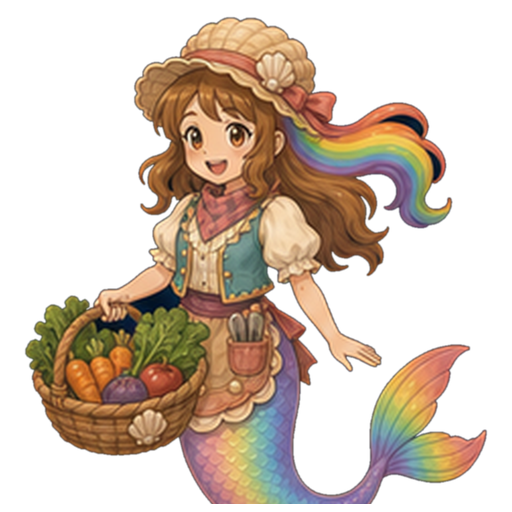
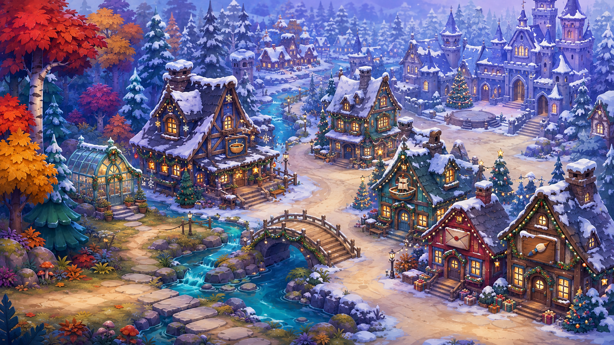
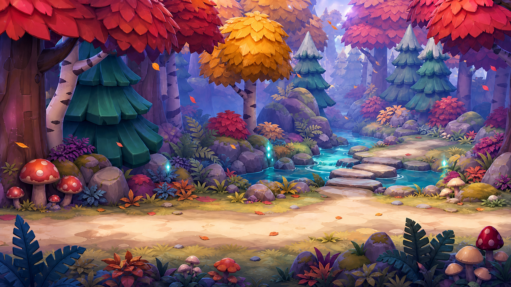
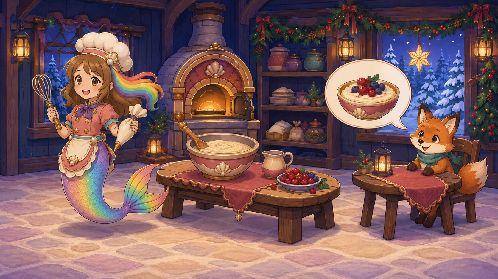

Returning / 01
Winter gardener
Water → harvest → bring a basket
A glowing greenhouse explains fresh berries in the winter village. Use broad touch targets and familiar garden actions.
The basket becomes restaurant supplies.
SUPERSEDED V1 — owner rejected the truncated art coverage and recreated castle; bridge route unverified. Use guide.html for the source-led revision.
A warm village inside the cool Northern artwork. Roshan grows, cooks, makes, delivers, paints and sings—leaving a little more Christmas behind after every visit.
Select a landmark to see its job and the change Roshan leaves behind.

A customer shows a dish picture. Roshan chooses, prepares and serves that exact dish, one kind customer at a time.
What stays: The meal appears on the shared Christmas table; the completed order remains saved.
Garden → restaurant is the suggested introduction. Village jobs then allow choice. A completed contribution invites the next useful step; no timer threatens Christmas.

Owner-confirmed July 29 reference, recovered unchanged. Full building/castle family still being located; source-specific production licensing remains open.
Carry forward: teal firs, lavender mist, turquoise water, rounded rocks, cream paths and those beautiful russet/gold trees.
Add for this proposal: snowy roof caps, amber windows, evergreen garlands, large star lanterns and restrained Christmas red. The entrance bridges autumn into winter.
Resolve before production: use actual remembered flat buildings when recovered. The overview invents provisional architecture to test the composition; it does not approve replacing existing artwork.
Every activity produces something specific for the village. The chapter can unfold over many short visits; each useful step saves.

Water → harvest → bring a basket
A glowing greenhouse explains fresh berries in the winter village. Use broad touch targets and familiar garden actions.
The basket becomes restaurant supplies.

Picture order → prepare → serve
Mix familiar cooking with a customer relationship. The same pictured request remains visible during the recipe.
The prepared dish reaches its customer and the shared table.

Sweep color → choose → place a star
A real village window becomes the canvas. Broad areas, free color choices and generous placement.
The child's decorated window stays in the village.
Fit pieces → assemble → test
Combine picture placement with a broad pull-along track. Two or three parts make a boat; then Roshan tries her actual toy.
Her boat occupies the workshop's display shelf.
Match a portrait → carry → post
One envelope and one highlighted route. A portrait on the door replaces reading an address or remembering a map.
The invitation reaches its neighbor; the gathering gains a guest.

Sound check → follow prompts → sing
A short musical celebration brings the contributions together. Prompts wait or recur kindly; Roshan starts the performance herself.
The courtyard becomes the completed Christmas gathering.
Reserve for later: Geologist's crystal display and Stuffie Doctor's toy-care visit. Neither expands this first six-career draft. Existing portraits above are reference art; new-role costumes have not been commissioned.
The Lantern Kitchen combines existing cooking gestures with a new context: understanding a visitor's request and bringing the finished dish back to them.

New composition study. Chef identity and tools reference existing art; the fox is a provisional incidental customer. Final actors, dish states, hitboxes and voices remain separate work.
Reuse the Chef outfit and complete mermaid silhouette. Keep the tail clear of counters and interface cards.
A large bowl and a few generous choices. Ingredients visibly become food; decoration does not compete with the action.
One kind customer and one pictured dish. Keep the order in view, with a large serving destination.
“Let's make this warm berry bowl.”
Customer shows a berry-bowl picture. Roshan touches the matching bowl picture; the request remains visible.
Stable customer, recipe and order identity. No random replacement after leaving.
Full six-frame storyboard, voice drafts and saved states are in NORTHERN_CHRISTMAS_DRAFT.md.
Start with berry porridge. Star biscuits and cocoa are optional menu expansion after the order relationship works and suitable ingredient/finished-state art is selected.
Choose the Christmas premise, career mix and winter treatment. Recover the remaining flat buildings and select useful existing families.
Plan three readable outdoor views and one restaurant composition. Record exact source, usage, required states and voice gaps.
Enter, choose, prepare, serve, save and return. Verify wrong inputs, help-only input, interruption, repeat serving and sibling Chef behavior.
Grow the six-career chapter around working contracts. Review the playable result with actual art, voices and target-device evidence.
This draft assumes a community Christmas gathering that Roshan helps prepare. Making Santa's workshop the central story would change the cast and emphasis; settle that before expanding the next draft. The proposed architecture and autumn-to-snow transition also remain open for review.
{kind=link}